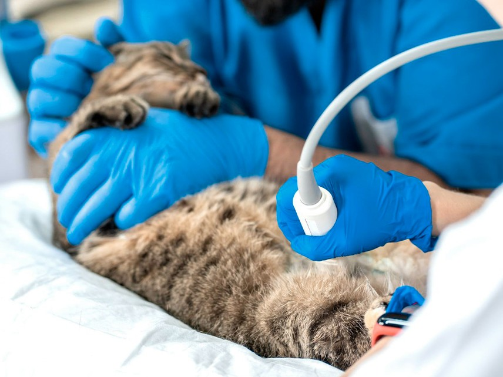
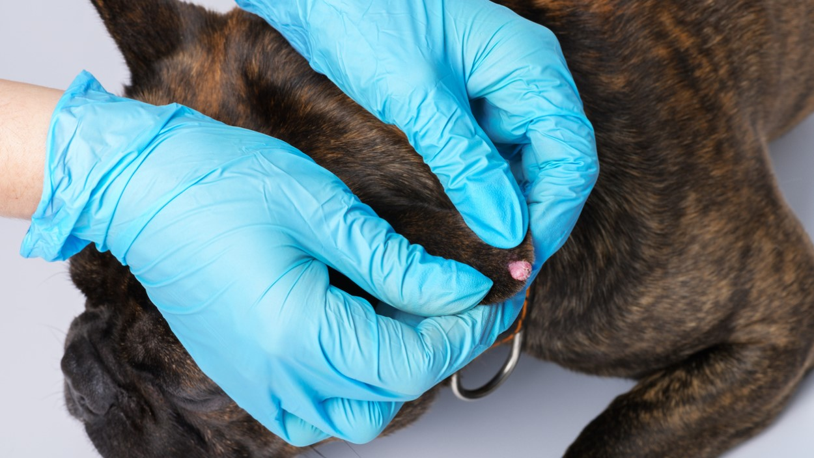

← Voltar ao Início
EXAMES
DIAGNÓSTICOS PRECISOS COM TECNOLOGIA DE PONTA


EXAMES DISPONÍVEIS
Análises Sanguíneas
Exames de Urina e Fezes
Radiografias
Ecografias
Eletrocardiograma (ECG)
Exames Ortopédicos
Biópsias e Citologias
Exames Oftalmológicos